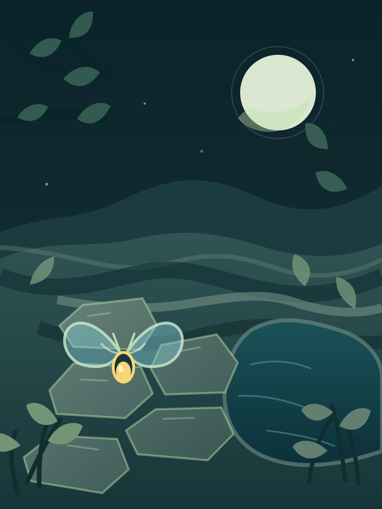

把夜色交给一盏灯
萤庭夜游
沿花径安放萤灯，让每一块石路见光。灯与灯不能相望，刻数的陶石旁也只能留下刚好的灯。
六章庭院，循光而行
六座庭院 · 六种光路
选择今晚的花径
夜庭植物标本册
循光生长的花叶
每章完成不同关卡，会依次发现这座庭院的六处植物细节。重游已完成的关卡不会重复解锁。
已照亮 0/0
数字 0/0
互照 0
选择萤灯或记号，再点石径。方向键选格，Enter 落灯，M 记号。
精确落灯选中分区的原始行列